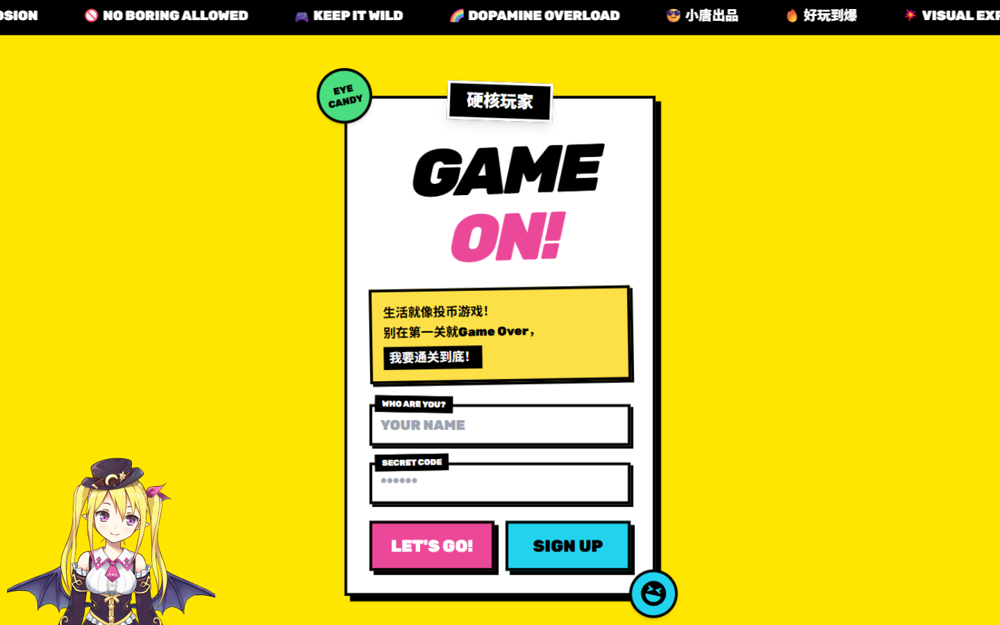

Projects
项目
每个项目从原型到落地，完整过程都在 git 历史里。

智能知识库问答系统
基于 LangChain + ChromaDB 的 RAG 应用：SSE 流式输出、多会话管理、数据驱动调参。支持在线试用（BYOK）。
Python · LangChain · FastAPI · ChromaDB · SSE
查看详情
🎮项目截图待替换assets/shot-arcade.png
BoomArcade · 街机乐园
4 款小游戏的在线街机：账号体系、最高分排行榜、管理后台，全栈部署在一台树莓派上。
Java · Jakarta Servlet 6 · JSP · MySQL · AI 辅助开发
查看详情